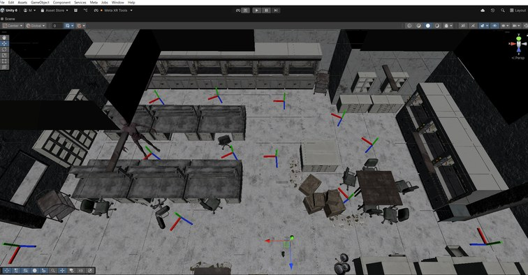
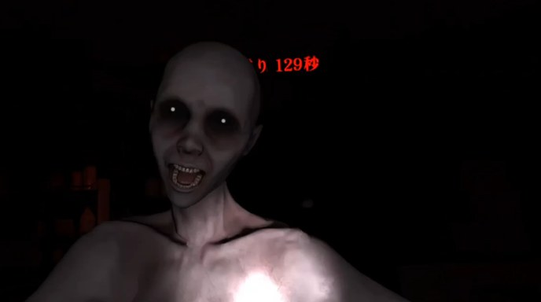
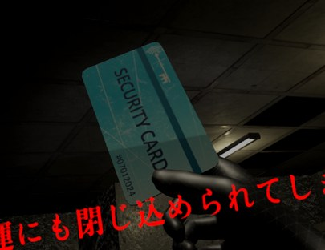
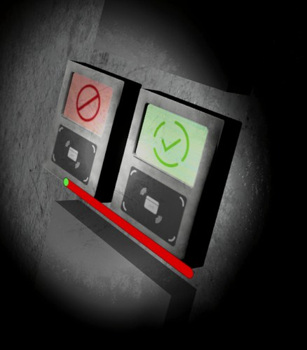

03 — Artechs Works / VR Horror Game
限られた物理スペースでもユーザーが安全かつ快適に体験できる設計と、
ホラー本来の純粋な恐怖に能動的なゲーム性を融合した「真のVRホラー」
Overview
10年前に閉鎖され、かつて人体実験が行われていたと噂される廃研究所。 プレイヤーはオカルト新聞記者として潜入するが、運悪く施設内に閉じ込められてしまう。 迫りくる「何か」の恐怖を退けながら、施設からの脱出を目指すホラーゲーム。
イベント展示という制約（限られた物理スペース・不特定多数が体験）の中で、 ステーショナリーモードを活かした安全設計と、純粋なホラー体験の両立を目指した。 パズル要素とホラーの融合で「受動的に怖がるだけでなく、能動的に行動できる」体験を設計。 Meta Haptics Studio による触覚フィードバックで没入感をさらに高めた。
Gallery




Media
My Role
Tech Stack
Events